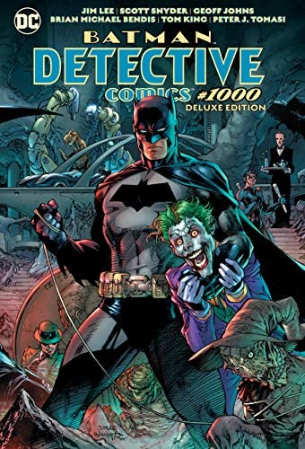

Batman
Kurgusal Karakter
Batman, ilk kez 1939'un mayıs ayında Detective Comics'in 27. sayısında çizilen bir çizgi roman süper kahramanıdır. Çizer Bob Kane ve yazar Bill Finger tarafından yaratılmıştır. Ancak çizgi romanlarda yaratıcısı olarak sadece Bob Kane'in adı geçer.